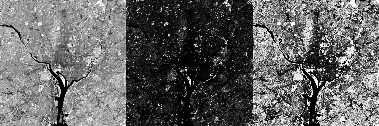
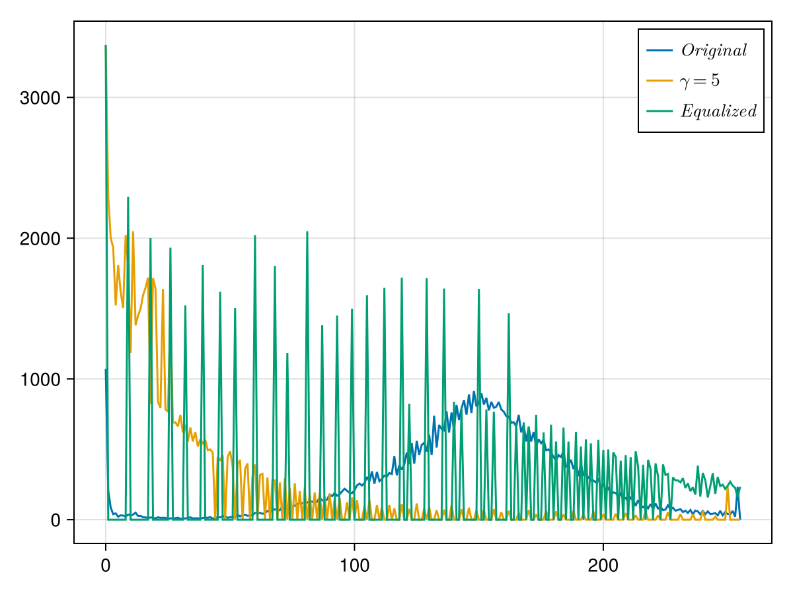

이미지 프로세싱의 기초
% %
%\[ \DeclarePairedDelimiters{\set}{\{}{\}} \DeclareMathOperator*{\argmax}{argmax} \]
1 소개
1.1 이미지
- 우리의 시각에서 감지하는 바와 같은 2차원 이미지 일 수도 있지만, 측정에서 얻는 2차원 데이터 일 수 도 있다.
- 여기서 다루는 이미지는 디지털 이미지이다. 정해진 크기의 수로 이루어진 2차원 배열을 이미지라고 통칭한다.
- 2차원 배열을 \(f[i,j]\) 로 표기하며, 행렬과 같이 \(i\) 는 세로 방향의 인덱스, \(j\) 는 가로 방향의 인덱스이다.
프로그래밍에서 2차원 배열의 인덱스는 행렬 표기의 관례를 따라 세로축-가로축 순서이지만, 수학에서 함수로서 표현할 때는 가로축-세로축 순서이다. 이것이 매우 혼동을 일으키지만 이 관례를 계속 사용하기로 한다. 즉
\[ \boxed{ I[i,\,j]= I(j, i) } \]
이다.
1.2 여기서
- Julia 에는
Images.jl이라는 이미지 처리 라이브러리가 있지만, - 그런데
OpenCV.jl은- 기본 이미지 배열 타입은
OpenCV.Mat이며 julia 의Array와 유사하지만 같지는 않다.Array에서 사용하는 연산중 많은 것을 사용 할 수 없다. 파이썬의 경우는opencv2의 배열은numpy의 배열인데… - 흑백 이미지라도
OpenCV.Mat은 3차원 배열이다. OpenCV.Mat에 대한 연산 (배열간, 배열과 스칼라 사이의 사칙연산을 포함하여) 을 모두 다시 쓰느니OpenCV.Mat과 juliaArray사이의 변환 함수를 사용하겠다.OpenCV.Mat의 배열의 저장 순서는 C++ 이나 파이썬 과 같이 행 우선 방식이지만 Julia 는 열 우선 방식이다. 따라서 변환시 이를 고려해야 한다.
- 기본 이미지 배열 타입은
- Julia 의 TestImages.jl 은 다양한 무료 이미지를 다운로드 받을 수 있도록 해 준다. 여기서의 이미지 처리에 사용하는 이미지는 특별한 언급이 없는 한 여기로부터 얻는다.
OpenCV.jl 을 julia 에서 사용하기 위해 다음과 같은 함수를 사용한다. 앞으로의 모든 코드는
using OpenCV, TestImages
cv = OpenCV;
# Julia Matrix to OpenCV.MAT 변환
function arr2mat(arr::Matrix{T}) where T<:Real
cv.Mat(permutedims(stack([arr, ]), [3,2,1]))
end
# Julia Image to Matrix 변환
function img2arr(img)
T = typeof(img[1, 1].val.i)
broadcast(q->T(q.val.i),img)
end
# Julia Image to OpenCV.Mat 변환
function img2mat(img)
T = typeof(img[1, 1].val.i)
tm = broadcast(q->T(q.val.i),img)
cv.Mat(permutedims(stack([tm, ]), [3,2,1]))
end
# OpenCV.Mat to Julia Matrix 변환
function mat2arr(mat::OpenCV.Mat)
return permutedims(mat.data, [3,2,1])
end2 점 기준 이미지 가공
각 픽셀 단위의 이미지 처리를 의미한다. 즉 픽셀에 대한 연신이 다른 픽셀의 정보와 독립적으로 이루어진다.
Gray scale image \(I[i, j]\) 를 생각하자. \(0\le I[i,\,j] \le 255\) 이다.
2.1 픽셀 반전법에 의한 이미지 가공
상수 \(a\) 와 \(b>0\) 에 대해 \[ T_i[I][i, j] = a-b I[i, j],\qquad 0 \le T_i[I] \le 255 \]
인 이미지 연산을 픽셀 반전법 이라고 한다. \(a=255,\, b=1\) 일 경우 완전한 흑백 반전이다. TestImages.jl 로부터 테스트 이미지를 다운받아 처리하였다.
img0= testimage_dip3e("Fig0108(a) (corn-fluorescence).tif")
img1 = img2arr(img0)
img2 = (UInt8(255) .- img1)
r = arr2mat(cat(img1, img2;dims=2))
2.2 \(\gamma\)-correction (or \(\gamma\)-encoding)
\(\gamma>0\) 에 대해 다음과 같이 변환한다. \[ T_\gamma [I][i, j] = I[i, j]^\gamma \]
\(\gamma\) 값이 \(1\) 보다 상당히 크면 픽셀 값이 클수록, \(\gamma\) 값이 \(1\) 보다 상당히 작으면 픽셀값이 작을수록 대조가 현저해진다.
\(0\le I[i,j]\le 255\) 일 때 \(\gamma<1\) 이면 \(I^\gamma[i, j] < 255\) 이며 \(\gamma>1\) 이면 \(I^\gamma[i,j]>255\) 일 수 있으므로 최대값이 255가 넘지 않도록 해 준다.
원본 이미지가 1024x1024 로 크기 때문에 그 크기를 줄여주었다.
img0= testimage_dip3e("Fig0227(a)(washington_infrared).tif")
img1 = cv.resize(img2mat(img0), cv.Size{Int32}(256, 256))
img2 = arr2mat(round.(UInt8, ((img1./255).^0.5)*255))
img3 = arr2mat(round.(UInt8, ((img1./255).^2)*255))
img4 = arr2mat(round.(UInt8, ((img1./255).^5)*255));
arr2mat(cat(img1, img2, img3, img4; dims=2))
- \(x\in (0,\,1)\) 에 대해 \(\gamma<1\) 이면 \(x^\gamma > x\) 이므로 화소 값이 높은 쪽으로 몰린다. 반대로 \(\gamma>1\) 이면 \(x^\gamma < x\) 이므로 화소 값이 낮은 쪽으로 몰린다.
2.3 히스토그램 균등화
이미지의 각 픽셀은 0 에서 255 사이의 정수값을 가진다. 그 값의 빈도는 이미지의 성질을 파악하는데 중요하다. 예를 들어 그림 2 의 \(\gamma\) 에 대한 히스토그램은 다음과 같다.
# opencv 의 calcHist 함수를 julia 에서 쓰기 편하게 변환함.
function histogram1d(mat::OpenCV.Mat{T}) where T<:Union{UInt8, UInt16}
tm = Int32(typemax(T))
v = cv.calcHist(cv.InputArray[mat,], Int32[0], fill(UInt8(1), size(img1)), Int32[tm+1], Float32[0, tm+1])
return (0:1:tm, Int64.(v[1,1,:]))
end
fig = Figure()
ax = Axis(fig[1,1])
for (img, g) in zip([img1, img2, img3, img4], [1.0, 0.5, 2, 5])
b, v = histogram1d(img)
lines!(ax, b, v, label = L"\gamma = %$g")
end
axislegend()
fig위의 그림에서 \(\gamma=5\) 일 때의 히스토그램은 낮은 값으로 몰려 있다. 혹은 이미지 중에는 전체 256 의 채널 갑 중에 어떤 값을 중심으로 몰려 있을 수 있다. 이런 경우 컨트라스트를 조절 하기 위해 앞서의 \(\gamma\)-correction 방법으로는 개선이 크게 되지 않는다. 이 때 사용하는 방법이 히스토그램 균등화이다. 한 채널을 중심으로 몰려 있는 히스토그램을 균등화 한다.
원래의 히스토그램을 변수 \(r\) 에 대해 \(h(r)\) 이며 \(r\) 은 \(0\) 부터 \(L-1\) (여기서는 255) 까지 가질 수 있고 \(h(r)\) 확률 별수 \(r\) 에 대한 확률 밀도에 비례하는 값이라고 가정하자. \(p_r(r)\) 을 확률밀도라고 하면
\[ p_r(r) = \dfrac{h(r)}{\int_0^L h(r')\,dr'} \tag{1}\]
이며 이 때 새로운 변수 \(s\) 를 다음과 같이 정의한다.
\[ s=(L-1)\int_{0}^r p_r(r')\,dr'. \tag{2}\]
그렇다면
\[ \dfrac{ds}{dr} = (L-1)p_r(r) \tag{3}\]
이며 새로운 변수 \(s\) 로 변환된 \(p_r(r)\) 은
\[ p_s(s) = p_r(r)\left|\dfrac{ds}{dr}\right| = \dfrac{1}{L-1} \tag{4}\]
이다. 즉 새로운 변수 \(s\) 에 대해 \(p_s(s)\) 는 항상 같은 값을 갖게 된다.
즉 어떤 픽셀의 강도가 \(r\) 이라면 새로운 강도는 \(s\) 가 된다. \(r=0,\,1,\ldots,\,L-1\) 의 값을 가지므로 이에 대한 \(s\) 값을
\[ s(r) = \text{round}\left[(L-1)\sum_{i=1}^r \dfrac{h(i)}{\sum_{j=1}^{L-1} h(j)}\right] \tag{5}\]
를 이용혜 계산한다. \(\text{round}(t)\) 는 \(t\) 를 반올림 하는 함수이다. OpenCV 에서는 equalizeHist() 함수로 구현되었으며 여기서는 이 함수를 사용한다.

img5 = cv.equalizeHist(img4)
arr2mat(cat(img1, img4, img5; dims=2))
3 노이즈 생성
노이즈의 원인은 다양하며, 노이즈에 대한 처리 방법도 다양하고 매우 중요하다. 일단 가장 빈번하고 다루기 쉬우며 보편적인 두가지 노이즈, 가우시안 노이즈 와 소금-후추 노이즈에 대해 알아보자. 노이즈의 원인은 생각하지 않고 실제 나타나는 양상으로만 분류한다. 또한 한 픽셀에서의 노이즈 발생 확률은 다른 픽셀의 노이즈 발셩 여부와 독립적이라고 가정하자.
1. 가우시안 노이즈 : 가우시안 노이즈는 어떤 평균에 대해 가우시안 분포를 갖는 노이즈이다. 즉 노이즈를 생성시키려면 평균값과 표준편차로 정의되는 가우시안 분포에 따라 임의의 점에 대해 생성해야 한다.
2. 소금-후추 노이즈 : 소금은 흰색이고 후추는 검은색이다. 소금-후추 노이즈는 보통 픽셀마다 최저값(0) 혹은 최고값 (UInt8 의 경우는 255) 에 가까운 노이즈가 발생하도록 한다. 흑백 이미지 상에서 최저값은 검은색, 최고값은 흰색으로 관례적으로 표현하기 때문에 노이즈가 마치 이미지에 소금과 후추를 뿌린 것 같다는 의미에서 소금-후추 노이즈라고 불린다.
3.1 노이즈 생성 코드
흑백 이미지에 대한 노이즈 생성 코드는 다음과 같다.
using Distributions
function gaussian_noise(img::OpenCV.Mat{T}, μ, σ, N) where T<:Union{UInt8, UInt16}
m, n = size(img)[2:3]
MM = typemax(T)
Y, X, V = rand(1:m, N), rand(1:n, N), round.(T, rand(truncated(Normal(μ, σ), 0, MM), N))
img2 = copy(img)
for (y, x, v) ∈ zip(Y, X, V)
img2[1, y, x] = v
end
return img2
end
function salt_pepper_noise(img::OpenCV.Mat{T}, N) where T<:Union{UInt8, UInt16}
m, n = size(img)[2:3]
MM = typemax(T)
Y, X, V = rand(1:m, N), rand(1:n, N), sample([0, MM], N)
img2 = copy(img)
for (y, x, v) ∈ zip(Y, X, V)
img2[1, y, x] = v
end
return img2
end아래 그림은 원본 이미지 testimage("cameraman.tif") 에 대해 가우시안 노이즈와 소금-후추 노이즈를 생성시킨 결과이다.
img0= img2mat(testimage("cameraman.tif"))
img_gn = gaussian_noise(img0, 100, 10, 10000)
img_sp = salt_pepper_noise(img0, 10000)
img2=arr2mat(cat([img_gn img_sp]; dims=2))두 이미지의 히스토그램은 다음과 같다. 가우시안 노이즈는 지정한 대로 픽셀값 100 근처에서 가우스 분포를 가지며, 소금-후추 노이즈는 최소값과 최대값에서 발생한다.
4 기하학적 변환과 보간법
영상에서 널리 이용되는 기하학적인 변환에는 아핀 변환(Affine transformation) 과 원근 변환(perspective transformation) 이 있다. 아핀 변환과 투시 변환은 모두 2차원 상의 직선이 직선으로 변환되는 공통점을 가지고 있다. 그러나 서로 평행한 두 직선이 변환 될 때 아핀 변환은 그 평행함이 유지되지만 투시 변환에서는 평행함이 유지되지 않는다.
4.1 아핀 변환 (Affine transformation)
대표적인 아핀 변환으로는 확대, 축소, 회전, 평행이동과 전단 변환등이 있으며, 아핀 변환의 합성도 아핀 변환이다. 아핀 변환은 \(3\times 3\) 가역행렬 \(\boldsymbol{T}\) 에 의해 정해지는 다음과 같은 변환으로 표현된다. 영상 변환에서는 \(2\) 차원 좌표로 \(\begin{bmatrix} x & y\end{bmatrix}^T\) 를 사용하지 않고 \(\begin{bmatrix}x & y & w \end{bmatrix}^T\) 로 표현되는 소위 homogeneous coordinate (동차 좌표) 를 사용한다. \(w\) 는 이미지의 스케일에 관련된 값으로 여기서는 우선 \(1\) 로 놓을 수 있다. 그리고 변환은 동차 좌표에 대해 수행하며 그 변환 행렬을 \(\boldsymbol{T}\) 라고 하자. 그렇다면 다음과 같이 쓸 수 있다.
\[ \begin{bmatrix} x' \\ y' \\1\end{bmatrix} = \boldsymbol{T} \begin{bmatrix} x \\ y \\ 1\end{bmatrix}. \]
예를 들어 \(\theta\) 만큼의 반시계 방향 회전 변환 \(\boldsymbol{T}_\theta\) 는
\[ \boldsymbol{T}_\theta = \begin{bmatrix} \cos \theta & -\sin \theta & 0 \\ \sin \theta & \cos \theta & 0 \\ 0 & 0 & 1\end{bmatrix} \]
이며 \(x\) 방향으로 \(d_x\) \(y\) 방향으로 \(d_y\) 만큼의 이동 변환 \(\boldsymbol{T}_\boldsymbol{d}\) 는
\[ \boldsymbol{T}_\boldsymbol{d} = \begin{bmatrix} 1 & 0 & d_x \\ 0 & 1 & d_y \\ 0 & 0 & 1\end{bmatrix} \]
이다. 또한 \(x\) 축 혹은 \(y\) 축 방향으로 기울이는 전단 변환(shear tranformation) \(\boldsymbol{T}_{Sx},\, \boldsymbol{T}_{Sy}\) 은 각각
\[ \boldsymbol{T}_{Sx} = \begin{bmatrix} 1 & s_x & 0 \\ 0 & 1 & 0 \\ 0 & 0 & 1\end{bmatrix},\qquad \boldsymbol{T}_{Sy} = \begin{bmatrix} 1 & 0 & 0 \\ s_y & 1 & 0 \\ 0 & 0 & 1\end{bmatrix} \]
이다. 또한 \(x\) 축 방향으로 \(a_x\) 배 만큼, \(y\) 축 방향으로 \(a_y\) 배 만큼 키우거나 줄이는 변환 \(\boldsymbol{T}_c\) 는
\[ \boldsymbol{T}_c = \begin{bmatrix} a_x & 0 & 0 \\ 0 & a_y & 0 \\ 0 & 0 & 1\end{bmatrix} \]
이다.
아핀 변환 행렬 \(\boldsymbol{T}\) 는 \(2 \times 2\) 행렬 \(\boldsymbol{R}\) 과 \(2 \times 1\) 행렬 \(\boldsymbol{t}\) 에 대해
\[ \boldsymbol{T}=\begin{bmatrix} \boldsymbol{R} & \boldsymbol{t} \\ \boldsymbol{0}^T & 1\end{bmatrix} \]
로 나타 낼 수 있다. \(\boldsymbol{R}\) 은 회전이나 전단 변화 같은 기하학적 변형을 나타내는 행렬이고 \(\boldsymbol{t}\) 는 평행이동을 나타내는 행렬이다. \(\boldsymbol{T}\) 의 역행렬은
\[ \boldsymbol{T}^{-1} = \begin{bmatrix}\boldsymbol{R}^{-1} & -\boldsymbol{R}^{-1}\boldsymbol{t}\\ \boldsymbol{0}^T & 1\end{bmatrix} \]
이다. \(\boldsymbol{T}\) 와 \(\boldsymbol{T}^{-1}\) 에서 보듯이 \(\boldsymbol{T}\) 를 이루는 \(\boldsymbol{R}\) 과 \(\boldsymbol{t}\) 만으로 아핀 변환과 역변환을 모두 나타낼 수 있으며, OpenCV 의 경우 \(2\times 3\) 행렬 \(\begin{bmatrix} \boldsymbol{R} & \boldsymbol{t}\end{bmatrix}\) 만으로 2차원 아핀 변환을 나타낸다. 아핀 변환의 미지수는 \(\boldsymbol{R}\) 의 행렬 성분 \(4\) 개와 \(\boldsymbol{t}\) 의 행렬 성분 \(2\) 개이며 따라서 6개의 파라미터가 결정되어야 한다. 즉 서로 한 직선상에 위치하지 않은 좌표상의 세 점과 그 점들이 변환되는 점을 안다면 아핀 변환을 결정 할 수 있다.
4.2 원근 변환 (Perspective transformation)

아핀 변환은 평행선이 평행선으로 유지되는 것과는 달리 원근 변환은 평행선이 평행선으로 유지되지 않는다. 원근 변환은 기본적으로 입체인 피사체를 2차원인 영상으로 변환시킬 때 발생하는 왜곡이다. 우리가 담는 피사체의 각 부분과 카메라 사이의 거리가 다르며, 피사체의 방향과 카메라의 방향에 따라 영상이 변형되기 때문이다. 원본 이미지 \(f[i, j]=f(j, i)\) 에 대해 원근 변환은 다음과 같은 변환행렬로 표현 할 수 있다.
\[ \begin{bmatrix} wx' \\ wy' \\ w'\end{bmatrix} =\boldsymbol{P}\begin{bmatrix} x \\ y \\ 1\end{bmatrix},\qquad \text{where }P_{33}=1 \]
여기서 \(w\) 원본 이미지에 대해 변환된 이미지의 스케일을 정하는 값이다. 원근 변환은 행렬 \(\boldsymbol{P}\) 에 의해 결정되며 \(P_{33}=1\) 이어야 하므로 모두 8개의 미지수가 존재한다. 따라서 네 점(물론 네 점의 가운데 아무 세점을 골라도 한 직선상이 있지 않아야 한다) 으로 원근 변환을 결정 할 수 있다. 변환된 이미지 \(P[f][i', j'] = P[f][wy',\, wx']\) 이다.
4.3 보간법
아핀 변환 혹은 원근 변환 \(T\) 에 대해 이미지 \(F\) 를 변환시켜 \(G=T[F]\) 인 이미지를 얻고자 한다고 하자. 즉 정해진 \(i,\,j\) 의 범위에 대해 \(G[i,j]\) 전체를 얻어야 한다. \(T\) 가 가역변환이므로 \(F=T^{-1}[G]\) 이므로 \(F[i',\,j'] = T^{-1}[G][i, j]\) 를 통해 \(F[i',\,j']\) 의 값으로 \(g[i,\,j]\) 를 채울 수 있으면 좋겠지만 \(i',\,j'\) 은 대부분 정수가 아니다. 이 때 보간법(interpolation) 을 사용하여, \(T[G]^{-1}[i,\,j]\) 로 정해지는 \((x,\,y)\) 근처의 \(F[i,j]\) 값을 이용하여 \(G[i,\,j]\) 값을 구한다.
최근접 이웃 보간
\((x,\,y)\) 에 가장 가까운 정수 값으로 보간하는 것이다. 즉 \[ F(x,\,y) \mapsto F(\text{round}(x),\, \text{round}(y)) \tag{6}\]
를 사용한다. 가장 간단하면서도 빠르지만 변환된 이미지의 품질이 좋지 못하다.
이중 선형 보간
\(x,\,y\) 에 대해
\[ i\le y < i+1,\, j\le x<j+1 \]
인 정수 \(i,\,j\) 를 찾아 \(f[i,j]\), \(f[i,j+1]\), \(f[i+1, j]\), \(f[i+1, j+1]\) 인 네 점을 이용한다.
\[ \begin{aligned} F(x,\,y) &= (1-x+j)(1-y+i)F(j, i) + (1-x+j)(y-i)F(j,\,i+1) \\[0.3em] &+ (x-j)(1-y+i)F(j+1, i) + (x-j)(y-i)F(j+1, i+1). \end{aligned} \tag{7}\]
앞서의 최근접 이웃 보간보다는 계산량이 많고 이미지 품질이 좋다.
이중 큐빅 보간
\(x,\,y\) 에 대해 \[ i\le y < i+1,\, j\le x<j+1 \]
인 정수 \(i,\,j\) 를 찾아 \(f[i+k,j+m]\), \(k,\,m = -1,\,0,\,1,\,2\) 인 16개의 점을 이용한다.
\[ d(s) = \left\{\begin{array}{ll} \dfrac{3|s|^3}{2}-\dfrac{5|s|^2}{2}+1, & 0 \le |s| < 1, \\ -\dfrac{|s|^3}{2}+\dfrac{5|s|^2}{2}-4|s|+2, \qquad & 1\le |s|<2 , \\ 0 & |s|>2 \end{array}\right. \]
에 대해 다음 함수를 이용하여 계산한다. \[ F(x,\,y) = \sum_{k=-1}^2 \sum_{m=-1}^2 F(j+k, i+m)d(x- j-k)d(y - i-m) \]
아래 그림은 1차원 데이터의 보간법과 2차원 이미지의 보간법을 설명하는 그림이다.

이제 변환 행렬과 보간법을 사용하여 기하학적으로 이미지를 변환시킬수도, 혹은 변환된 이미지를 복원시킬 수도 있다. 아핀 변환 행렬은 직접 입력할 수도 있고, 원래의 이미지와 변환되는 이미지에서 각 3개(아핀 변환의 경우) 혹은 4개(원근 변환의 경우) 를 선택하여 변환 행렬을 계산 할 수도 있다. 예를 들어 다음과 같이 변환하는 아핀 변환을 생각하자.
\[ [1, 1] \to [4, 5],\qquad [2, 1] \to [5, 6], \qquad [3, 3] \to [4, 2] \]
아핀 변환을 위해서는 변환된 이미지의 크기를 OpenCV.Size{UInt32} 형태의 객체로 전달해야 한다. 이것을 cvSize 함수로 구현하였다.
function cvSize(w::T1, h::T2) where {T1<:Integer, T2<:Integer}
return cv.Size(Int32(w), Int32(h))
end
p0 = Float32[1 1; 2 1; 3 3]
q0 = Float32[4 5; 5 6; 4 2]
p1, q1 = arr2mat(p0), arr2mat(q0)
H = cv.getAffineTransform(p1, q1)
img1 = cv.warpAffine(img0, H, cvSize(512, 512))cv.warpAffine(img0, H, cvSize(512, 512)) 는 이미지 img0 를 아핀 변환 행렬 H 를 이용하여폭 512, 높이 512 크기의 이미지로 변환하라는 명령이다.
많이 사용되는 몇몇 변환에 대해서는 아핀 변환 행렬을 얻는 함수가 이미 존재한다. 예를 들어 (cX, cY) 를 중심으로 45도 만큼 회전시키며, 스케일을 0.7 배로 줄이는 변환에 대한 변환행렬은
M=cv.getRotationMatrix2D(cvPoint(cX, cY), 45.0, 0.7)으로 얻을 수 있다. 여기서 cvPoint 함수는 2차원 혹은 3차원 상의 점을 OpenCV 의 OpenCv.Point(x, y) 객체로 반환하는 함수이다.
function cvPoint(x::T1, y::T2) where {T1<:Real, T2<:Real}
T = promote_type(T1, T2)
return cv.Point{T}(T(x), T(y))
end
function cvPoint(x::T1, y::T2, z::T3) where {T1<:Real, T2<:Real, T3<:Real}
T = promote_type(T1, T2, T3)
return cv.Point3{T}(T(x), T(y), T(z))
end이를 이용하여 이미지를 45도 회전하고 크기를 0.7배로 줄이는 변환을 수행해보자. 두가지 보간법을 사용하였다.
h, w = size(img0)[2:3]
cX, cY = Float32(h/2), Float32(w/2)
M = cv.getRotationMatrix2D(cvPoint(cX, cY), 45.0, 0.7)
r1 = cv.warpAffine(img0, M, cvSize(w, h), flags=cv.INTER_NEAREST)
r2 = cv.warpAffine(img0, M, cvSize(w, h), flags=cv.INTER_CUBIC)
img3 = arr2mat(cat([r1 r2]; dims=2))보간법에 따른 이미지가 큰 차이가 보이지 않을 수 도 있지만 이것은 아래에서 좀 더 정확히 보일 것이다.
TestImages.jl 로 부터 \(256\times 256\) 이미지 cameraman.tif 을 다운 받은 후 \(100 \times 100\) 으로 크기를 줄였다. 그리고 그 이미지를 앞서 소개한 세가지 방법으로 확대하였으며 결과는 아래와 같다.
img0= cv.resize(img2mat(testimage("cameraman.tif")), cv.Size{Int32}(100, 100))
img1 = cv.resize(img0, cv.Size(Int32(256), Int32(256));interpolation= cv.INTER_NEAREST)
img2 = cv.resize(img0, cv.Size(Int32(256), Int32(256));interpolation= cv.INTER_LINEAR)
img3 = cv.resize(img0, cv.Size(Int32(256), Int32(256));interpolation= cv.INTER_CUBIC)
s = arr2mat(cat(img1, img2, img3; dims=2))5 공간적 이미지 필터링
공간적 필터링은 이미지를 2차원 공간으로 간주한다. 어떤 픽셀의 값을 그 주변값의 연산을 통해 바꿔서 원하는 목적을 달성하는 것을 공간적 이미지 필터링 이라고 한다. 많은 경우 2차원 배열을 사용하며 이 배열을 커널(kernel) 혹은 마스크(mask) 라고 한다. 즉 원본 이미지 \(F\) 의 픽셀 \([i,\,j]\) 에 대해 부근의 픽셀의 집합 \(N_{[i,j]}\) 을 사용하는 어떤 연산 \(H\) 가 정의되어 연산된 이미지 \(G\) 가 만들어 진다면, 즉
\[ G[i,j] = H\left(N_{[i,j]}\right) \tag{8}\]
일 때 이 과정을 공간적 이미지 필터링 이라고 한다. 만약 \(G[i,\,j]\) 가 \(N_{[i, j]}\) 의 성분들의 선형결합이라면 이 필터를 선형 필터(linear filter) 라고 하며, 그렇지 않다면 비선형 필터라고 한다. 대표적으로 주변 \(n\) 개의 픽셀의 평균값을 취하는 평균값 필터가 선형 필터이며, 중간값을 취하는 중간값 필터는 비선형 필터이다. 선형 필터는 다음에 나올 합성곱으로 표현 할 수 있다.
5.1 가장저리 처리
뒤에 나오겠지만 평균값 필터는 이미지의 어떤 픽셀과 그 주변의 선택된 픽셀값과의 평균으로 필셀값을 대체하는 필터이다. 예를 들어 이미지 \(f\) 의 \([i, j]\) 를 중심으로 하는 \(3\times 3\) 정사각형에 속하는 9개의 픽셀값의 평균값으로 필터링 한다면
\[ G[i,\,j]=\frac{1}{9} \sum_{p=-1,\,0,\,1} \sum_{q=-1,\,0,\,1} F[i-p,\,j-q] \]
일 것이다. 노이즈 처리에 사용 될 수 있다. 이 경우 가장자리 라면, 예를 들어 \(i=1\) 이면 \(i-1\) 픽셀이 없으므로 문제가 된다. 일반적으로 필터링의 범위를 고려하여 필터링에 방해가 되지 않도록 이미지의 크기를 일시적으로 키우고 원본 이미지에 없던 부분을 적당한 값으로 채운 후(이 작업을 패딩(padding) 이라고 한다) 그 이미지 \(\overline{F}\) 에 대해 필터링을 하고, 필터링이 모두 끝난 후 필터링된 이미지 \(\overline{g}\) 를 원본 이미지에 맞게 크기를 줄이게 된다. 패딩을 할 때 특정한 값으로 채울 수도 있고(상수 패딩(constant padding)), 가장 가까운 원본 이미지 픽셀값을 복사할 수도 있으며(복제 패딩(replication padding)), 패딩되는 픽셀에 가장 가까운 원본 이미지 픽셀을 중심으로 대칭이 되도록 원본 픽셀 값을 복사할 수도 있다(반사 패딩(reflection padding)).
이후로는 이미지 필터를 다룰 때 사용자가 적절한 패딩을 선택했다고 가정한다.
5.2 평균값 필터 (mean filter)
노이즈를 줄이고 이미지를 부드럽게 하는 데 사용된다. 필터의 크기는 폭 w, 높이 h 에 대해 cv2.Size(w, h) (즉 여기서는 cvSize(w, h)) 로 결정한다.
cv.blur(img0, 3)5.3 중앙값 필터 (median filter)
비선형 필터의 대표적인 필터는 중앙값 필터로 특히 소금-후추 노이즈를 제거하는데 많이 사용된다. 중앙값 필터는 원본 이미지 img 와 커널 크기 ksize 에 대해 OpenCV.medianBlur(img, ksize) 와 같이 사용한다. ksize==3 일 경우 \([i, j]\) 를 중심으로하는 \(3 \times 3\) 크기의 부분 이미지에 대한 중간값으로 변환시킨다. 앞의 그림 5 의 소금-후추 노이즈 이미지(img_sp) 를 중간값 처리 한 결과는 아래와 같다.
cv.medianBlur(img_sp, 3)5.4 표준편차 필터(standard deviation filter)
표준편차 필터는 주변 픽셀값들의 표준편차로 픽셀값을 변환시킨다. 만약 한 픽셀 주변의 값이 서로 크게 바뀐다면 표준 편차 값이 클 것이다. 한 픽셀 주변 값이 서로 비슷하다면 표준 편차 값이 작을 것이다. 일단 이것을 구현해 보자. 우리는 표준편차가 제곱의 평균값에서 평균값의 제곱을 뺀 값의 양의 제곱근이라는 것을 안다.
imgx = cv.Mat(convert.(Float32, img0))
imgx_sq = cv.Mat(imgx .* imgx)
imgx_mu = cv.blur(imgx, cvSize(3, 3))
imgx_sqmu = cv.blur(imgx_sq, cvSize(3, 3))
imgx_musq = cv.Mat(imgx_mu .* imgx_mu)
img_sdfiltered = cv.Mat(imgx_sqmu .- imgx_musq)표준편차 필터는 위의 영상처럼 원본 영상 속 피사체의 윤곽을 도드러지게 보여준다.
6 합성곱 개념으로서의 이미지 필터링
합성곱과 상관값은 공간적 이미지 필터링의 일종이다.
6.1 합성곱과 상관값
우선 상관값을 살펴 보자. 커널이
\[ K = \begin{bmatrix} 1 & 0 & -1 \\ 1 & 0 & -1 \\ 1 & 0 & -1\end{bmatrix} \]
이고 원본 이미지의 \(F[i, j]\) 를 중심으로 한 \(3\times 3\) 배열이
\[ \tilde{F}_{[i, j]}= F[i-1:i+1, j-1:j+1]= \begin{bmatrix} 4 & 0 & 2 \\ 1 & 0 & 3 \\ 2 & 3 & 1\end{bmatrix} \]
이라면 \((K\otimes F)[i, j]\) 는 \(K\) 와 \(\tilde{F}_{[i, j]}\) 의 성분별 곱의 합으로 정의된다. 즉
\[ (k\otimes I)[i, j] = 1\times 4 + (-1)* 2 + 1 * 1 + (-1)\times 3 + 1 \times 2 + (-1)\times 1 = 1 \]
이다. 그러나 합성곱은 식 9 에서 알 수 있듯이 \(K\) 의 성분과 대각 위치에 있는 \(\tilde{F}_{[i, j]}\) 의 성분의 모든 곱의 합이다. 즉, \[ (K \ast F)[i, j] = 1\times 2 + (-1)* 4 + 1 * 3 + (-1)\times 1 + 1 \times 1 + (-1)\times 2 = -1 \]
이다. 혹은 합성곱은 커널을 180 도 회전시킨 행렬과의 상관값이라고 생각 할 수도 있다. 또 커널과 합성곱의 중요한 차이는 아래 표와 같다.
| 성질 | 합성곱 | 상관값 |
|---|---|---|
| commtative | \(F\ast G = G \ast F\) | \(-\) |
| associative | \(F\ast(G \ast H) = (F \ast G)\ast H\) | \(-\) |
| distributive | \(F\ast(G+H)= F\ast G + F \ast H\) | \(F\otimes (G + H) = F\otimes G + F \otimes H\) |
일반적으로 상관값이 계산량이 적고 직관적인데 비해 합성곱이 수학적으로 좋은 성질을 많이 가지고 있다. 또한 커널이 중심에 대해 대칭이라면 합성곱과 상관값은 동일하다.
예제 1 정의 1 의 커널 인덱스 표기법을 사용하자. 커널이 \(K[-s,\,-t] = K[s,\,t]\) 라면 \(K\ast F = K \otimes F\) 임을 보일 수 있다.
\[ \begin{aligned} (K \ast F)[i,\,j] &= \sum_{s=-a}^{a} \sum_{t=-b}^b K[s,\,t] \,F[i-s,\, j-t] &&; s\to -s,\, t\to -t \\ &=\sum_{s=-a}^{a} \sum_{t=-b}^b K[-s,\, -t] F[i+s,\, j+t] &&;K[-s,\,-t] = K[s,\,t]\\ &= \sum_{s=-a}^{a} \sum_{t=-b}^b K[s,\, t] F[i+s,\, j+t] \\ &= (K\otimes F)[i, j] \end{aligned} \]
가끔 합성곱과 상관값이 서로 혼용되기도 한다. 예를 들어 신경망의 합성곱 신경망(convolutional neural network, CNN) 에서는 실제로 이름에 나온 합성곱 연산이 아닌 상관 연산을 사용한다. 그러나 역사적, 관례적 이유로 합성곱 신경망이라는 이름을 사용한다.
6.2 분리 가능한 필터 커널
명제 1 \(m \times n\) 행렬 \(\boldsymbol{K}\) 가 정의 2 와 같이 분리가능하다면 \(\boldsymbol{K} = \boldsymbol{v}\ast \boldsymbol{w}^T\) 이다. 즉 두 벡터의 합성곱이다.
(증명). \[ K[i,j] = v_i w_j = v[i, 0] (w^T)[0, j]=\sum_{s=0} \sum_{t=0} v[s, t] w^T[0+s, j+t] = v \ast w^T \]
이므로 \(\boldsymbol{K}\) 는 \(\boldsymbol{v}\) 와 \(\boldsymbol{w}^T\) 의 합성곱이다. \(\square\)
\(K= v \ast w\) 라면
\[ K \ast f = (v \ast w) \ast f = v \ast (w \ast f) \]
이다. 즉 분리 가능한 커널을 순차적으로 적용시킨 것과 같다. \(M \times N\) 이미지 \(f\) 에 대해 \(m\times n\) 커널 \(K\) 를 이용하여 필터링했다면 한 픽셀당 \(mn\) 번의 곱셈과 \(mn-1\) 번의 덧셈, 그리고 1번의 할당을 수행하며, 이것을 \(MN\) 번 수행하므로 모두 \(MN(2mn)\) 번의 연산을 수행한다. \((w\ast f)\) 연산에는 \(MN(2n)\) 번의 연산을 수행하며 이후 \(v\) 를 적용하면 \(MN(2m)\) 번의 연산을 수행하므로 모두 \(MN(2m+2n)\) 번의 연산을 수행한다. 즉 두가지 동일한 결과를 낳는 연산의 연산 횟수 비가
\[ \text{ratio}=\dfrac{Mn(2mn)}{Mn(2m+2n)}= \dfrac{mn}{m+n} \]
이다. \(m=n=5\) 일 경우 분리 가능한 커널을 분리하여 사용하는 것이 연산 횟수가 2.5배 줄며 \(m=n=11\) 일 경우 5.5 배 줄게 된다. 물론 연산 횟수의 감소가 그만큼의 시간의 절약을 정확하게 의미하지는 않지만 커널이 클 때 분리가능하다면 이 방법을 사용하는 것은 큰 장점이 된다.
명제 2 영행렬이 아닌 \(m \times n\) 행렬 \(\boldsymbol{K}\) 가 정의 2 와 같이 분리가능한 것과 \(\operatorname{rank}(\boldsymbol{K})=1\) 은 동치이다.
(증명). \(\boldsymbol{K}=\boldsymbol{v}\boldsymbol{w}^T\) 이고 \(\boldsymbol{v}\), \(\boldsymbol{w}\) 가 모두 열벡터 이므로 두 행렬의 \(\operatorname{rank}\) 는 \(0\) 혹은 \(1\) 이다. 둘 중 하나가 \(\operatorname{rank}0\) 이면 \(\boldsymbol{K}=\boldsymbol{0}\) 이므로 가정에 모순된다. 따라서 두 열벡터는 모두 \(\operatorname{rank}1\) 열벡터 이며 따라서 \(\operatorname{rank}(\boldsymbol{K})=1\) 이다.
이제 \(\operatorname{rank}(\boldsymbol{K})=1\) 이면 \(\boldsymbol{K}\) 에는 \(\boldsymbol{0}^T\) 가 아닌 행 \(\boldsymbol{k}^T\) 가 존재하며 나머지 행은 \(\boldsymbol{k}^T\) 의 (0 을 포함한)스칼라 곱이다. 첫번째 행 \(\boldsymbol{k}^T\) 이 \(\boldsymbol{0}^T\) 가 아니라고 하자.
\[ \boldsymbol{K} = \begin{bmatrix} \boldsymbol{k}^T \\ a_2 \boldsymbol{k}^T \\ \vdots \\ a_m \boldsymbol{k}^T\end{bmatrix} = \begin{bmatrix} 1 \\ a_2 \\ \vdots \\ a_m \end{bmatrix} \boldsymbol{k}^T \]
이다. 즉 \(\operatorname{rank}(\boldsymbol{K})=1\) 이면 \(\boldsymbol{K}\) 는 분리가능하다. \(\square\)
합성곱은 cv.filter2D 함수를 이용한다. OpenCV 관련 페이지 를 참고하라. 뒤에 나올 소벨 커널(식 14) 의 \(G_x\) 를 적용하면
K1 = arr2mat(Int32[1 0 -1; 2 0 -2; 1 0 -1])
cv.filter2D(img0, -1, K1)cv.filter2D 함수의 두번째 인자 -1 은 입력 이미지 img0 와 같은 성분의 타입을 사용하라는 의미이다.
7 빈도 필터
7.1 이미지에 있어 ‘빈도 (frequency)’
이미지의 빈도 혹은 주파수(frequency) 는 매우 많이 등장하는 개념이지만 혼동되기 쉽다. 이미지에서 어떤 픽셀과 바로 이웃한 픽셀의 값이 매우 큰 차이를 보일 때 그 픽셀을 중심으로 픽셀 값의 ’변화’는 매우 크다고 할 수 있다. 이렇게 픽셀 값의 변화가 매우 짧은 픽셀 간격에서 나타날 때, 그 픽셀은 높은 주파수 성분, 반대의 경우를 낮은 주파수 성분이라고 부른다.
하이패스 필터 (high-pass filter), 로우패스 필터 (low-pass filter)
- 필터가 낮은 빈도를 나타내는 성분만 제거하거나 픽셀 값을 줄이는 기능을 갖는다면 하이패스(high-pass) 필터라 하고, 그 반대의 경우를 로우패스(low-pass) 필터라 한다.
- 사실 하이패스 필터는 이미지에서 가장자리 (엣지, edge)를 찾아 내거나 가장자리 신호를 선택적으로 강화하는 기능으로 자주 사용된다.
- 로우 패스 필터는 반대로 픽셀 값의 변화를 줄이는 역할을 한다. 일반적으로 노이즈 감소 필터는 로우 패스 필터이다. 앞서 살펴 본 평균값 필터, 중간값 필터, 가우시안 필터 등이 로우패스 필터이다. 로우 필터 패스를 사용하면 영상의 차이가 흐려지는 역할을 하기 때문에 블러링(blurring) 이라고 불리기도 한다.
7.2 Unsharp masking & highboost filtering
Unsharp mask
- 원본 이미지를 일단 평균값 필터링 같은 로우패스 필터로 블러링 (blurring) 처리한 후, 원본 이미지에서 처리된 이미지를 빼서 차이 값으로 이루어진 행렬을 ‘Unsharp mask’ 라 한다. 원본이미지를 \(F[i,j]\), 블러링 된 이미지를 \(\overline{F}[i,j]\) 라 하면 unsharp mask \(M[i,j]\) 는 다음과 같다.
\[ M[i,j]=F[i,j]-\overline{F}[i,j] \tag{10}\]
Highboost filtering
- 이 때 어떤 1보다 큰 양의 실수 \(c\) 를 \(M[i,j]\) 에 곱해서 원본에 더해준다면 가장자리신호가 더 현저해지며 이것을 highboost filtering 이라 한다. 즉
\[ G[i,j]=F[i,j]+c\,M[i,j] = F[i,j]+c(F[i,j]-\overline{F}[i,j]) \tag{11}\]
7.3 Differential High-pass Filter
픽셀에 미분, 즉 차분을 적용한다고 하자. 일단 가장 간단하게 생각하면 \(x\) 방향 편미분은
\[ \partial_x F [i,j] = F[i,j]-F[i-1,j],\qquad \text{or} \qquad \partial_x F[i,j] = F[i+1,j]-F[i,j] \]
이며 \(y\) 방향 편미분은
\[ \partial_y F[i,j] = F[i,j]-F[i,j-1],\qquad \text{or} \qquad \partial_y F[i,j]=F[i,j+1]-F[i,j] \]
가 될 것이다. 이것을 그대로 적용 시킨 커널을 만들 수도 있지만 노이즈에 취약하기 때문에 거의 사용되지 않는다.
로버츠 커널 (Roberts kernel)
대각선 방향의 편미분에 해당하는 2차원 배열을 로버츠 마스크라 하며 아래와 같다.
\[ G_x = \begin{bmatrix} +1&0&0 \\ 0&-1&0 \\ 0&0&0 \end{bmatrix}, \quad G_y=\begin{bmatrix}0&+1&0\\-1&0&0\\0&0&0 \end{bmatrix} \tag{12}\]
Prewitt kernel
\[ G_x = \begin{bmatrix}+1&0&-1\\+1&0&-1\\+1&0&-1\end{bmatrix}, \qquad G_y = \begin{bmatrix}+1&+1&+1\\0&0&0\\-1&-1&-1\end{bmatrix} \tag{13}\]
Sobel kernel
\[ G_x = \begin{bmatrix}+1&0&-1\\+2&0&-2\\+1&0&-1\end{bmatrix},\qquad G_y = \begin{bmatrix}+1&+2&+1\\0&0&0\\-1&-2&-1\end{bmatrix} \tag{14}\]
7.4 Laplaician filter
- 1차 미분 필터들은 한 번만 차분 값을 계산하기 때문에, 차분의 크기도 작고, 이로 인해서 경계가 확실한 부분만 추출할 수 있는 반면, 노이즈가 있거나 엣지 (edge)의 강도가 약한 부분에는 불완전한 추출을 보이는 한계가 있다.
- 이를 극복하기 위해 개발된 필터가 2차 미분형, 즉, 라플라시안 필터 (Laplacian filter) 이다. 라플라시안 필터는 말 그대로, 연속 함수 \(f(x,y)\)의 이계 도함수를 의미하는 라플라시안으로부터 유래한 것으로, 디지털 이미지에 대해, 아래와 같은 근사 공식을 활용하여 만들 수 있다.
\[ \begin{aligned} \nabla^2 f &= \partial_x^2 f + \partial_y^2 f \\ \partial_x^2 I[i,j] & = I[i-1,j]+I[i+1,j]-2I[i,j] \\ \partial_y^2 I[i,j] & = I[i,j-1]+I[i,k+1]-2I[i,j] \\ \nabla^2 I[i,j] &= \partial_x^2 I[i,j]+ \partial_y^2 I[i,j] =I[i-1,j]+I[i+1,j]+I[i,j-1]+I[i,k+1]-4I[i,j] \end{aligned} \]
라플라시안 필터는, 앞서 살펴 본 1차 미분형 필터보다, 더 넓은 범위에서 그리고 모든 방향을 고려하여 차분 값을 계산할 수 있기 때문에, 경계선에서 픽셀 값이 변화하는 것 을 훨씬 강한 강도로 잡아낼 수 있으며, 이로 인해, 잡음에도 강하고, 엣지 정보를 더 잘 추출할 수 있다는 장점이 있다. 다만, 계산 시간은 1차 미분형 필터보다는 늘어나게 된다.
Matlab 에서는
fspecial(‘laplacian’,alpha)의 명령어로 laplacian kernel 을 만드는데 이는 보통의 laplacian kernel을 약간 수정한 것으로 다음과 같이 정의된다. \[ \dfrac{1}{1+\alpha} \begin{bmatrix} \alpha & 1-\alpha & \alpha \\ - \alpha & 4 & - \alpha \\ \alpha & 1-\alpha & \alpha\end{bmatrix} \]Matlab 에서는 \(\alpha\) 값을 \([0,\,1)\) 에서 조정한다고 하는데, cv2 에서는 이러한 함수를 찾을 수 없어서 직접 만들어 사용하였다.
7.5 Laplacian of Gaussian Filter (LoG filter)
원본 이미지에 가우시안 블러링을 한 후 라플라시안 필터를 적용한다.
이 때 LoG filter 는 다음과 같은 꼴을 띈다.
\[ \nabla^2 \left( G_{\sigma} (x,\,y) \right) = \dfrac{x^2+y^2-2\sigma^2}{\sigma^4} \exp \left(- \dfrac{x^2+y^2}{2\sigma^2}\right) \]
- 라플라시안 필터와 유사하게, LoG 필터도 이미지에서 엣지 부분의 정보를 효과적으로 추출할 수 있다. 특히, 라플라시안 필터보다 더 넓은 범위에서 이미지 합성 곱을 하기 때문에, 이미지 추출 과정에서 왜곡 가능성을 줄일 수 있다는 장점이 있다.
7.6 위너 필터 (Wiener filter)
원본 이미지 I 와 노이즈 처리된 이미지 J 사이의 차이를 통계적 관점에서 (혹은 확률적 관점에서) 정량화 하는 방법으로는 평균제곱편차 mean square error (MSE) 가 있다. MSE의 정의는 아래와 같다.
\[ \text{MSE} = \dfrac{1}{N} \sum_{i,\,j} \left[ I[i,\,j]-J[i,\,j]\right]^2 \]
위너 필터는 이러한 이미지 간 차이를 최소화하는 모든 종류의 비선형 필터를 의미한다.
위너 필터의 노이즈 감소 기능
- 원본 이미지 I에 노이즈 N 이 낀 이미지 I’ 를 생각하자. 즉 다음과 같은 식을 생각하자.
\[ I'[i,j]=I[i,j]+N[i,j] \]
- 노이즈의 경우 특별한 언급이 없으면 가우시안 노이즈를 생각한다. 그렇다면 노이즈의 평균은 \(0\) 이 될 것이며 노이즈의 분산 \(\sigma_N^2\) 는 \(0\) 이 아닌 값을 갖는다. 어떤 픽셀을 중심으로 커널 배열을 덮어서 움직인다고 하자. 커널은 보통 원본 배열보다 아주 작기때문에 커널에 덮이는 영역의 평균은 \(0\) 될 확률이 매우 낮으므로 그 평균값을 \(m_{ij}\), 분산을 \(\sigma^2_{ij}\) 라 하자. 이 때 해당 영역의 노이즈를 최소화하는 방식으로 노이즈를 처리하면 다음과 같은 관계식을 얻는다.
\[ J[i,j]=m_{ij} + \dfrac{\sigma^2_{ij}}{\sigma^2_{ij} + \sigma^2_N} {\big(} I[i,j]-m_{ij}{\big)} \]
- 그런데 많은 경우 우리는 원본 이미지가 없이 노이즈가 낀 이미지만 있으므로 노이즈의 분산 \(\sigma_N^2\) 를 모른다. 여기에 괜찮은 방법이 있는데, 그것은 바로 \(\sigma_N^2\) 를 모든 로컬 분산 \(\sigma_{ij}^2\) 의 평균으로 잡는 것이다.
\[ \sigma_N^2 = \dfrac{1}{N} \sum_{i,j} \sigma^2_{i,j} \]
파이썬에서의 위너 필터
파이썬에서는 scipy 에서 wiener filter를 사용한다. Library refence 를 보면 대놓고 matlab의 wiener2 함수를 implementation 했다고 나온다. 사용법은 다음과 같다.
from scipy.signal.signaltools import wiener
filtered_img = wiener(original_img, mysize=3)여기서 mysize 는 kernel size 이다. 자세한 것은 library reference 참고. 이 때 주의할 것은 original_img 가 0 에서 255 사이의 정수값을 갖는, 보통 gray scale image 에서 많이 사용되는 uint8 형식의 정수형이면 안된다. 이 경우 다음과 같이 사용하는 것이 좋다.
filtered_img = wiener(original_img.astype(np.float64), ksize)